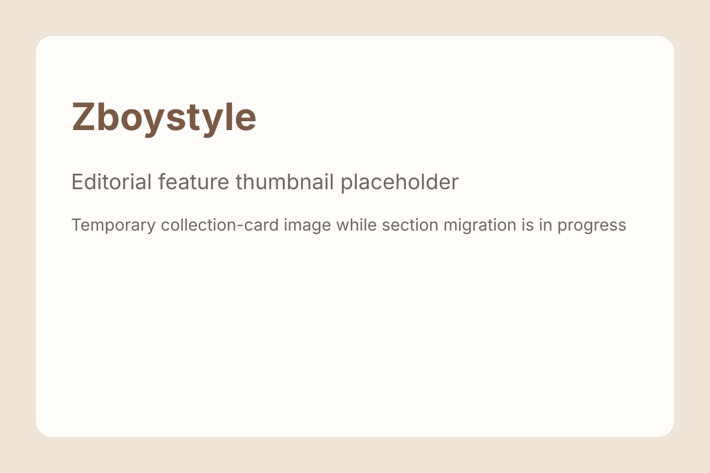

{% assign style_posts = site.en_style | sort: 'date' | reverse %}
{% assign tops_posts = site.en_tops | sort: 'date' | reverse %}
{% assign bottoms_posts = site.en_bottoms | sort: 'date' | reverse %}
{% assign all_posts = style_posts | concat: tops_posts | concat: bottoms_posts | sort: 'date' | reverse %}
{% assign latest_posts = all_posts | slice: 0, 4 %}
{% assign featured_posts = all_posts | where: 'featured', true | slice: 0, 6 %}
<main class="wrap">
  <section class="hero story-hero">
    <div class="hero-copy">
      <p class="eyebrow">English Edition</p>
      <h1>A style map for youth menswear you can actually browse, wear, and shop</h1>
      <p class="lede">Zboystyle follows softboy, campus-boy, cleanfit, niche menswear brands, and product-led outfit logic through bilingual editorial guides shaped by Chinese internet style culture.</p>
      <div class="toc">
        <span class="pill">Softboy</span>
        <span class="pill">Campus boy</span>
        <span class="pill">Cleanfit</span>
        <span class="pill">Products</span>
        <span class="pill">Shops</span>
      </div>
    </div>
    <figure class="photo">
      
      <figcaption>Zboystyle turns style language, products, and shopping clues into a more readable wardrobe map.</figcaption>
    </figure>
  </section>

  <section class="feature-card archive-panel">
    <h2>Latest stories</h2>
    <p>The four most recent articles across all current sections.</p>
    {% include homepage_latest_list.html posts=latest_posts %}
  </section>

  <section class="feature-card feature-panel">
    <h2>Editors’ picks</h2>
    {% include homepage_featured_grid.html posts=featured_posts chip_label="Picked" fallback_image="../assets/img/placeholder-style.svg" %}
  </section>

  <section class="post-grid">
    <a class="post" href="../en/style/index.html"><span class="tag">Section</span><h3>Style</h3><p>Softboy, campus-boy, cleanfit, Korean/Japanese casual, and the silhouette logic behind them.</p></a>
    <a class="post" href="../en/tops/index.html"><span class="tag">Section</span><h3>Tops</h3><p>Cardigans, shirts, hoodies, knitwear, and polos that define the upper half of youth-oriented menswear.</p></a>
    <a class="post" href="../en/bottoms/index.html"><span class="tag">Section</span><h3>Bottoms</h3><p>From straight trousers to denim and sweats, learn how trousers shape proportion and overall tone.</p></a>
    <a class="post" href="../en/shop/index.html"><span class="tag">Section</span><h3>Shops</h3><p>Keep the commerce-mining side alive with curated stores, products, and direct buying routes.</p></a>
    <a class="post" href="../en/accessories/index.html"><span class="tag">Section</span><h3>Accessories and basics</h3><p>Bags, hats, socks, glasses, underwear, and layering basics that decide how complete a look feels.</p></a>
  </section>
</main>
